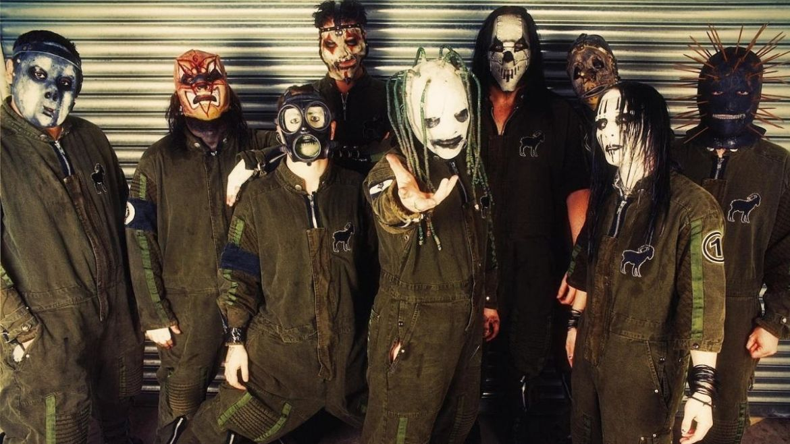

Em setembro de 1995 a banda "The Pale Ones" foi criada, com Shawn Crahan na bateria, Gray no baixo, Anders Colsefini nos vocais e Steele na guitarra. Joey Jordison ingressou na banda pouco depois, tendo o papel de baterista e, posteriormente, transferindo Crahan para a percussão. A banda continuou a desenvolver sua visão mais do que seria na banda, tomaram a decisão de acrescentar o segundo guitarrista, entrando em ação Josh Brainard e Colsefini mudando para a percussão junto com os vocais. A banda fez a sua primeira performance ao vivo sob o nome "Meld", em 4 de dezembro de 1995 em um clube chamado, The CroBar, em Des Moines. Logo depois, Jordison sugeriu a banda a mudar o nome para Slipknot, devido à música de mesmo nome da demo, Mate. Feed. Kill. Repeat. A banda também começou a experimentar sua imagem, vestindo roupas grotescas, e eventualmente, a anti-imagem foi conceito desenvolvido entre os membros usando máscaras e macacão industrial. Com muitos materiais já prontos, a banda começou em um estúdio local, SR Áudio com Sean McMahon. Em Fevereiro de 1996, o guitarrista Donnie Steele deixou a banda devido sua crença cristã, embora os outros membros da banda estivessem dispostos a permitir que ele ficasse, Steele decidiu sair. Seu substituto, Craig Jones, chegou durante o período de mixagem deste novo projeto. Em 4 de abril, o Slipknot fez sua primeira apresentação, no "Des Moines Reggae Clube The Safari", onde fez a maior parte dos seus primeiros shows. A banda começou a perceber mais uma vez que havia necessidade de uma mudança, uma vez que foram acrescentando samples em suas gravações, mas que não poderia produzir esses sons ao vivo. Posteriormente, Craig Jones mudou-se para tocar sampler e Mick Thomson foi trazido para ocupar o espaço na guitarra. Após o conflito sobre a mixagem e masterização, a banda liberou seu primeiro álbum Mate. Feed. Kill. Repeat. (MFKR), no Dia das Bruxas, em 31 de outubro de 1996.[6] Com a produção deste álbum, Sean McMahon começou a distribuir o registro e gestão das empresas, o que resultou em um airplay na rádio local e, por sua vez, ganhou um lugar no Dotfest. Slipknot havia retornado para o estúdio para desenvolver novos materiais, o que exigiu um vocalista com voz melódica e violenta. Como resultado, Corey Taylor foi contratado a partir de colegas da banda Stone Sour; sendo que Colsefni mudou-se para o vocal de apoio e percussão. Com o seu novo vocalista, a banda continuou a fazer shows no Safari, durante um dos quais momentos, Colsefini no show surpreendeu tanto os fãs quanto a banda no palco anunciando que ele estava saindo da banda. A diferença na percussão foi preenchido por Greg Welts, que era carinhosamente conhecido como Cuddles. No final de 1997, a banda começou usar macacões como uniforme e atribuíram números individuais para cada membro, respectivamente.
